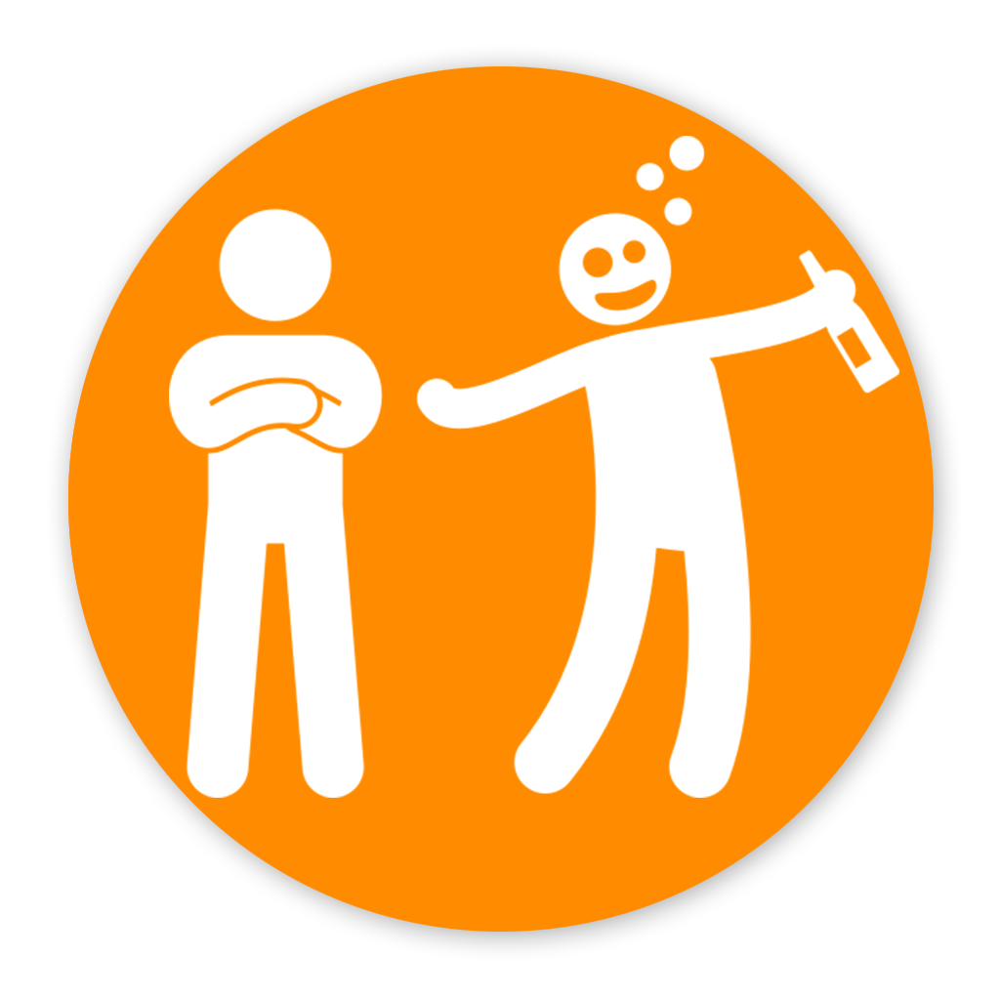

×

Presiona para comenzar 🃏
Presiona para comenzar 🃏
🎨 Creador de "Tas en Pedo"
📍 Amante de la buena vibra, las juntadas y las noches que terminan con anécdotas épicas.
Me encanta crear cosas que hagan que la gente se ría, se conecte y termine contando historias que empiezan con "no sabés lo que pasó esa noche...". "Tas en Pedo" nació en una de esas ideas locas que surgen entre juntadas, risas, alcohol y humo, con ganas de sumar más chispa a las previas y fiestas.
🍻 Cuando no estoy inventando juegos
✨ Creo firmemente que las mejores cosas pasan cuando se juntan las personas correctas y la noche fluye sola.
Así que, si te cruzás mi nombre por la app, ya sabés quién está detrás de todo esto. ¡Nos vemos en la próxima ronda!
____
👀 PD: La foto que ves por acá es prueba de que siempre estoy listo para un buen momento.
📸 Instagram: @marcs.alright